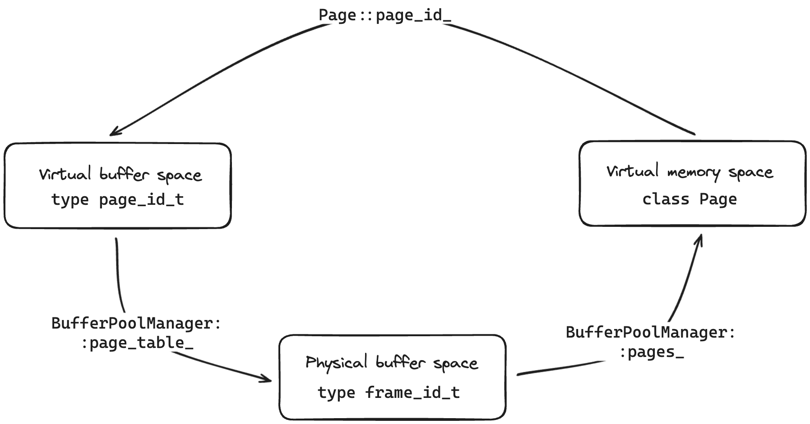

참고한 것들
CodeRef (인데 private 이라 주인장만 볼 수 있음)
이 task 의 구현은 이후에 부분적으로 변경되었습니다.
Design and Implementation of Buffer Pool Manager
- Buffer Pool Manager (BPM), 즉 이름 그대로 “버퍼 풀” 을 관리하는 컴포넌트를 구현하는 것이다.
- 이 컴포넌트는 다음의 두 컴포넌트와 협력하여 작동한다.
BufferPoolManager Class Fields
Page, Frame 용어 정리
- 운영체제의 가상메모리에서와 유사한 문맥으로, page 와 frame 라는 워딩을 사용한다.
- 근데 가이드에서나 코드상에서나 워딩을 헷갈리게 해놔서 “page” 라는 용어가 나오면 이것이 virtual space 를 의미하는 것인지, physical space 을 의미하는 것인지 문맥으로 파악해야 한다.
- 따라서 용어들에 대해 정리를 좀 해보자.
- 우선 OS 와 DB 각각의 입장을 생각해 보자.
- OS 는 진짜 “물리 메모리” 공간을 관리하며, 이것을 “가상 메모리” 공간으로 추상화해 DB 와 같은 여러 process 에게 제공한다.
- DB process 는 이 “가상 메모리” 공간을 “물리 버퍼” 공간 으로 생각하고, DB process 안의 BPM component 는 이 “물리 버퍼” 공간을 관리하며 다른 DB component 들에게 “가상 버퍼” 공간으로 추상화해 제공한다.
- 즉, 위의 두 문장에서 큰따옴표로 적어놓은 4가지 공간 단위가 있다는 것을 알 수 있다. 각각에 대해 가이드와 코드에서 어떻게 표현되어 있는지 살펴보자.
- “물리 메모리”: 얘는 OS 가 알아서 할 영역이기 때문에 가이드나 코드에서 언급이 없다.
- “가상 메모리”: 얘는 가이드에서 pointer 로 표현되고, 코드에서는 이 포인터에 대한 container class 인
Page클래스로 표현된다. - “물리 버퍼”: 얘는 가이드에서 page, physical page, frame 등으로 표현된다. 코드에서는
frame_id_t자료형이 여기에 해당한다고 생각하면 된다. - “가상 버퍼”: 얘는 (진짜 개열받게) 가이드에서 page 로 표현된다. 코드에서는
page_id_t자료형으로 표현된다.- 즉, 가이드 상에서 page 는 “물리 버퍼”, “가상 버퍼” 모두의 의미로 혼용된다. 이것에 대해 문맥으로 파악해야 된다는 것.
- 정리해 보자.
| 용어 | 설명 | 가이드에서의 표현 | 코드에서의 표현 |
|---|---|---|---|
| “물리 메모리” | OS 가 사용할 물리 공간 | X | X |
| “가상 메모리” | OS 가 DB process 에게 제공하는 가상 공간 | pointer | Page class |
| “물리 버퍼” | BPM 이 사용할 물리 공간 | page, frame, physical page | frame_id_t type |
| “가상 버퍼” | BPM 이 DB component 에게 제공하는 가상공간 | page | page_id_t type |
- 좀 이해 되시나?
page_table_, pages_, Page::page_id_
- 하여간 그럼 “가상 버퍼” 를 제공하기 위해 BPM 은 “물리 버퍼” 및 “가상 메모리” 를 어떻게 관리하는지 보자.
- 일단 client 는
page_id_t로 “가상 버퍼” 에 접근한다. 그럼 BPM 은 이것을frame_id_t로 변환하기 위해 map 하나를 관리한다. 이 map 이BufferPoolManager::page_table_클래스 멤버이다.- 그리고, 원론적으로는 여러 “가상 버퍼” 가 하나의 “물리 버퍼” 에 매핑 될 수 있지만,
- 특정 시점에 여러개의 “가상 버퍼” 를 핸들링한다는 의미가 아니고, 시간이 지나며 다른 “가상 버퍼” 를 핸들링할 수도 있다는 의미이다.
- 특정 시점에는 하나의 “가상 버퍼” 는 하나의 “물리 버퍼” 와 매핑되기 때문에 구현은 1:1 매핑으로 했다.
- 즉, “물리 버퍼” 에 매핑되는 “가상 버퍼” 가 변경되는 시점에 기존의 매핑은
page_table_에서 제거한다는 것.
- 즉, “물리 버퍼” 에 매핑되는 “가상 버퍼” 가 변경되는 시점에 기존의 매핑은
- 그리고, 원론적으로는 여러 “가상 버퍼” 가 하나의 “물리 버퍼” 에 매핑 될 수 있지만,
- 근데 이
frame_id_t는 그냥 “물리 버퍼” 에 대한 주소 체계일 뿐, “가상 메모리” 공간은 아니다. 따라서 이frame_id_t에 매핑될 “가상 메모리” 공간인Page를 관리해야 한다. 이것은BufferPoolManager::pages_클래스 멤버로 구현된다.- 얘는
frame_id_t를 index 로 하여Page로 매핑되게끔 하기 위해Page[]배열로 선언된다. - 따라서 당연히
frame_id_t와Page는 1:1 매핑된다.
- 얘는
- 추가적으로,
Page에는 이 “가상 메모리” 가 어느 “가상 버퍼” 에 매핑되었는지를 역추적하기 위한Page::page_id_클래스 멤버가 있다. - 즉, 다음과 같이 변환되는 셈.

free_list_
- 여기에는 이미 초기화 완료되어 지금 당장 사용할 수 있는 frame 들이 담겨 있는 list 이다.
- “지금 당장 사용” 할 수 있다는 소리는 여기에 있는 frame 들에 대해서는 반드시 초기화되어 이전의 데이터나 메타데이터가 남아 있지 않다는 것이다.
- 당연히 처음에 BPM 이 초기화될 때는 BPM 이 관리하는 모든 frame 이 여기에 들어간다.
Page Class Fields
Page는 위에서 설명한Page::page_id_외에도 몇가지 frame 에 대한 메타데이터를 더 갖고 있다.
Pin, Unpin
- 하나의 page 에 여러 client 가 붙어서 작업을 할 수 있는데,
- 이때 한 client 가 사용하려고 붙는 것을 pin, 그만 사용하기 위해 놓아주는 것을 unpin 이라고 한다.
- 그리고 아무도 pin 하고 있지 않으면, 그 놈은 이제 evict 의 대상이 된다.
- 코드상에서는
Page::pin_count_클래스 멤버로 표현된다.
Dirtiness
- Frame 의 데이터가 변경되었는지 아닌지를 추적하는 flag 이다.
- 이것이 있는 것은 당연하게도 만약에 데이터가 변경되지 않았다면 굳이 disk 로 내려보낼 필요가 없기 때문.
- 코드상에서는
Page::is_dirty_클래스 멤버로 표현된다.
Helpers (Private Member Functions)
- BPM 의 API 구현을 설명하기 전에, 이들을 구현하는 데에 사용될 helper function 부터 살펴보자.
- 얘네들은 skeleton code 에는 없고, 주인장이 필요에 의해 만든 것들이다.
BufferPoolManager::AllocateFrame()
- 지금 당장 사용할 수 있는 “물리 버퍼” 공간을 할당받기 위한 함수이다.
- 즉, 이 함수가 정상적으로 실행되면, 모든 것이 초기화된 따끈한
Page가 준비되고, 여기에 접근할 수 있는frame_id_t값이 반환된다.
- 즉, 이 함수가 정상적으로 실행되면, 모든 것이 초기화된 따끈한
- 간단한 흐름은:
- 우선
free_list_를 찾는다. - 만약 저기에 없다면,
LRUKReplacer를 이용해 frame 하나를 evict 하고 이것을 초기화해 “물리 버퍼” 공간을 마련한다.- 이 함수가 LRUKReplacer::Evict 를 호출하는 유일한 함수이며,
- 초기화하는 것은 ResetFrame 함수를 이용한다.
- 우선
- 위 흐름에서 눈치챌 수 있듯이, 이 공간을 항상 할당받을 수 있는 것은 아니다.
free_list_에도 없고, evict 도 실패 (만일 evict 할 수 있는 frame 이 없는 등) 할 수 있기 때문.- 따라서 이때는
std::nullopt를 반환해 실패했음을 알린다.
BufferPoolManager::ResetFrame()
- 어떤 “물리 버퍼” 공간을 초기화해주는 함수이다.
- 크게 세 가지 작업을 한다.
page_table_과Page::page_id_간의 Sync 를 맞춘다.page_table_의Page::page_id_에 대한 entry 를 지우고,Page::page_id_도INVALID_PAGE_IDconstant 값으로 초기화해 이놈이 어느 page 와도 매핑되어 있지 않게 한다.
Page를 초기화 한다.- DiskScheduler::Schedule 를 이용해 기존의 데이터를 disk 로 내려보내고,
- 이때, dirtiness 를 고려해서 dirty 하지 않는다면 내려보내지 않는다.
- “가상 메모리” 공간도 싹 비우고,
- 그 외 여러 메타데이터 값들도 초기화한다.
- DiskScheduler::Schedule 를 이용해 기존의 데이터를 disk 로 내려보내고,
- LRUKReplacer::Remove 을 이용해
LRUKReplacer에서도 이 frame 을 지워 access history 를 초기화한다.
BufferPoolManager::IsFrameLoaded()
- 어떤 “가상 버퍼” 에 매핑되는 “물리 버퍼” 가 있는지 확인한다.
- 일단 구현은
page_table_에 해당page_id_t에 대한 entry 가 있는지만 확인하면 된다.- 이것은
page_table_에page_id_t와frame_id_t가 의도한 대로 1:1 매핑이 잘 되고 있다는 가정에서 나온 것이다. - 즉, 만약 여러
page_id_t가 하나의frame_id_t에 매핑되어 있다면, map entry 를 확인하는 것만으로는 불충분하기 때문. - 따라서 이 함수에서는 추가적으로,
page_id_t->frame_id_t->Page->page_id_t를 쭉 훑으며 sync 가 맞는지 확인하고, 안맞으면 exception 을 던지는 확인작업도 수행한다.
- 이것은
BPM APIs (Public Member Functions)
- 그럼 이제 이 building block 들로 BPM 의 API 를 구현하는지 보자.
- … 그 전에 top-level overview 먼저 보면,
NewPage()와FetchPage()는 client 입장에서 page 를 사용하려고 할 때 사용하는 API 이다.UnpinPage()와DeletePage()는 page 를 그만 사용하고자 할 때 사용하며FlushPage()와FlushAllPages()는 page 의 frame 이 디스크에 sync 될 수 있도록 하는 API 이다.
BufferPoolManager::NewPage()
- 새로운 page 를 할당받는 함수이다.
- 대략적인 과정은:
- AllocateFrame 으로 frame 을 할당 받고,
BufferPoolManager::AllocatePage()로page_id_t값도 하나 할당 받아서- 이 함수는 위에서는 따로 언급 안했는데, skeleton code 에 이미 구현되어 제공되는 함수이기 때문이다.
- 메타데이터 세팅을 해준다.
page_table_,Page::page_id_, 간의 sync 를 맞추기LRUKReplacer에 frame 추가 (LRUKReplacer::RecordAccess)pin_count_올려줌
- 뭐 특별히 해준 예외처리는 없고 다만 frame 할당받지 못한 경우 (
std::nullopt) 에 대해서만 처리해주었다.
BufferPoolManager::FetchPage()
- NewPage 가 새로운 page 를 할당받는 것과 다르게 이 함수에서는 이미 할당받은 page 를 불러오는 역할을 한다.
NewPage()와 작동과정은 얼추 비슷하다.- IsFrameLoaded 로 page 에 대한 frame 이 존재하는지 확인하고 (존재하면 바로 반환),
- 없다면
NewPage()에서 처럼 AllocateFrame 으로 frame 을 할당 받아 - 메타데이터 세팅을 해주고 반환한다.
BufferPoolManager::UnpinPage()
- 이것은 반대로 어떤 client 가 해당 page 를 그만 사용하려고 할 때 호출하는 API 이다.
- 작동과정은 간단하다.
- IsFrameLoaded 로 page 에 대한 frame 이 존재하는지 확인하고 (없으면 바로 반환)
- 해당 frame 의
pin_count_가 이미 0인지 확인 pin_count_를 조정해주고- 조정한 뒤 0이 됐다면,
LRUKReplacer에서 evictable flag 를 켜준다. - 마지막으로 인자로 받은 dirtiness 도 page 에 업데이트 해준다.
- 이것을 인자로 받는 이유는 client 만이 page 의 dirtiness 를 알고 있기 때문.
BufferPoolManager::FlushPage()
- “가상 메모리” 상의 데이터를 disk 로 내려보내는 API 이다.
- 작동과정은:
- IsFrameLoaded 로 page 에 대한 frame 이 존재하는지 확인하고 (없으면 바로 반환)
- DiskScheduler::Schedule 를 이용해 disk 로 내려보낸 뒤
- 다만 Flush 의 경우에는 dirtiness 는 고려하지 않는다. 걍 무조건 내려버리기
- 이제는 더 이상 dirty 하지 않으니 dirtiness 를 끈다.
BufferPoolManager::FlushAllPages()
- 모든 page 를 flush 하는건데
- 간단하다. 반복문으로 모든 page 에 대해 FlushPage 를 해주면 된다.
BufferPoolManager::DeletePage()
- 이 함수는 BPM 에서 해당 page 를 지우는 것이다.
- 작동 과정은
- IsFrameLoaded 로 page 에 대한 frame 이 존재하는지 확인하고 (없으면 바로 반환)
- 해당 frame 의
pin_count_가 0보다 큰지 확인 (크면 delete 불가능) - Delete 가능하다면,
- ResetFrame 으로 초기화
- 깨끗한 frame 을
free_list_에 넣어주고 DeallocatePage으로 해당 page 의page_id_t를 무력화해준다.- 이 함수도 앞에서 언급을 안했는데, skeleton code 에 제공되는 함수이다.